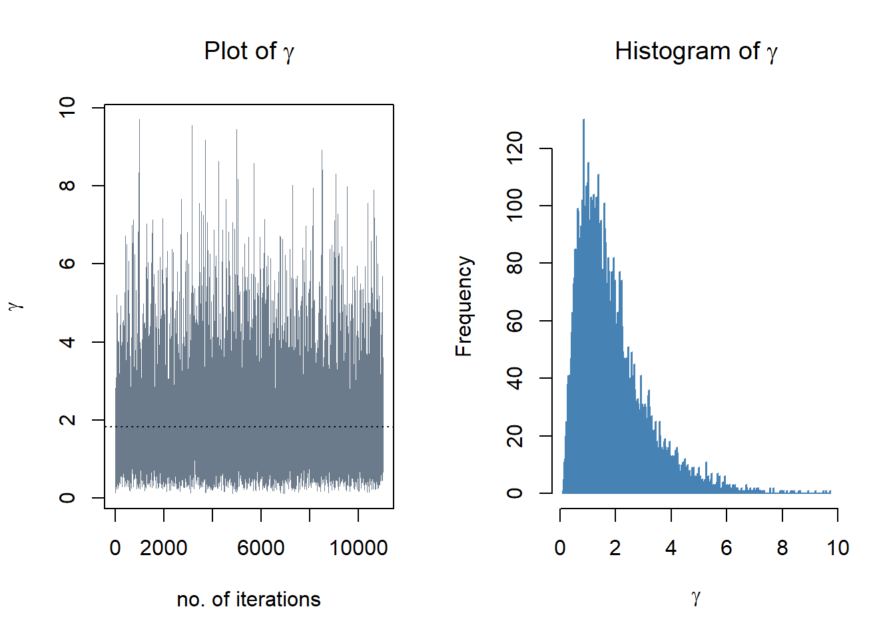
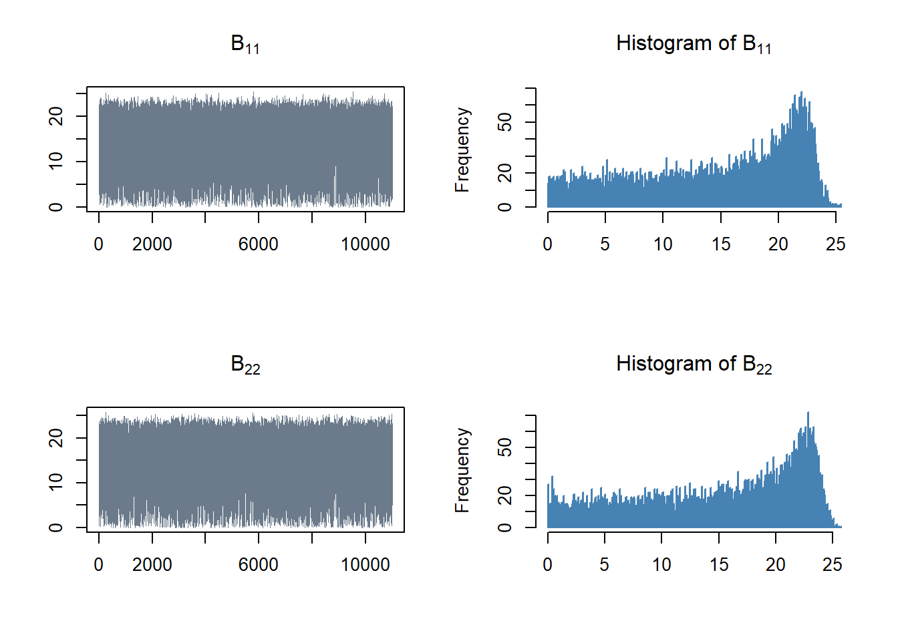
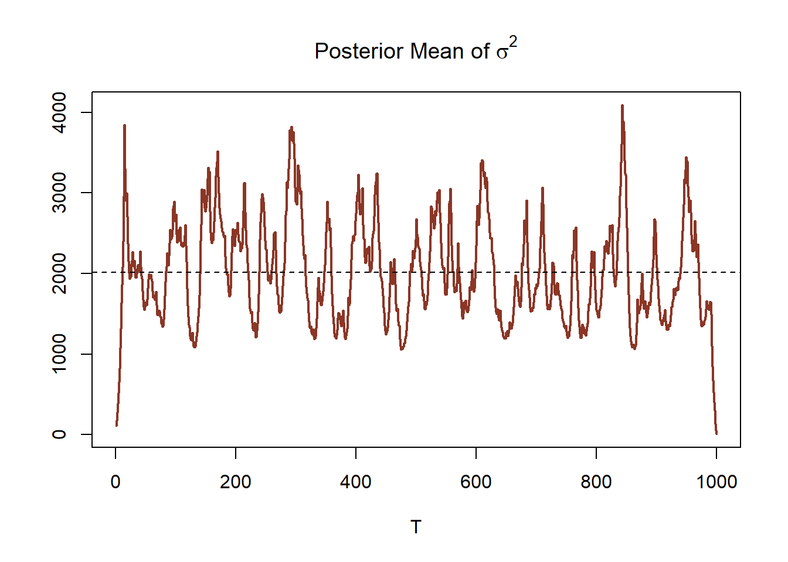
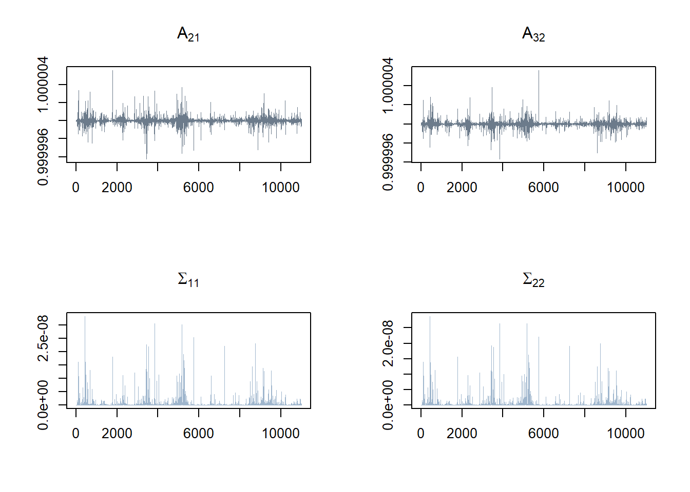
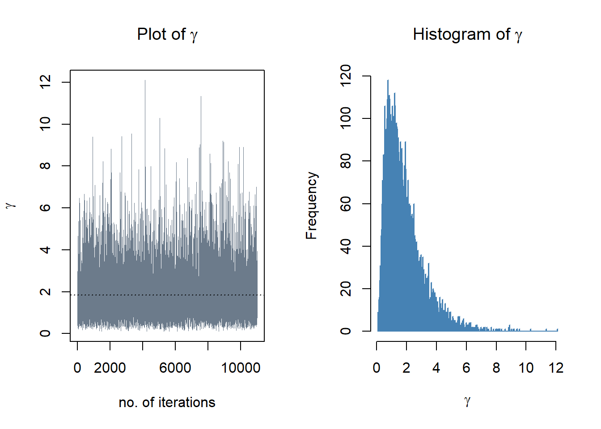
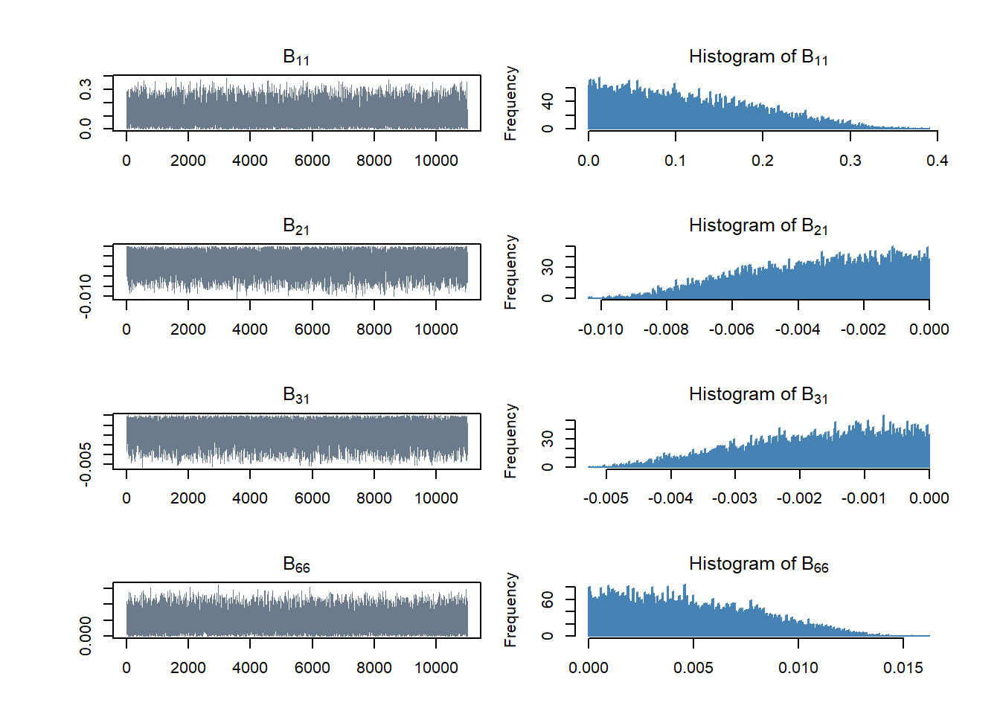
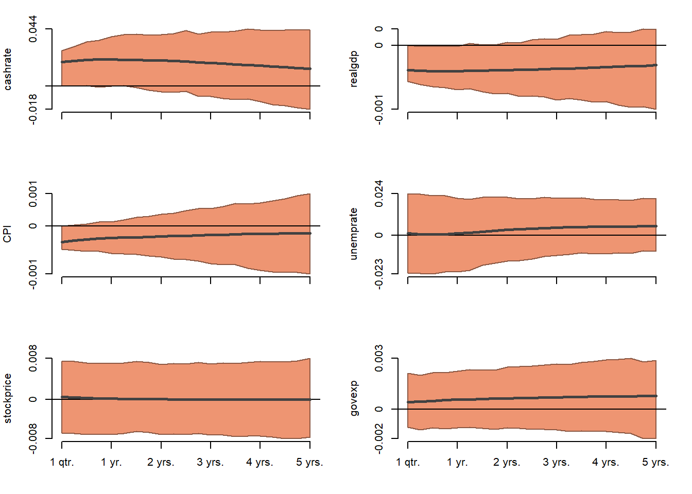
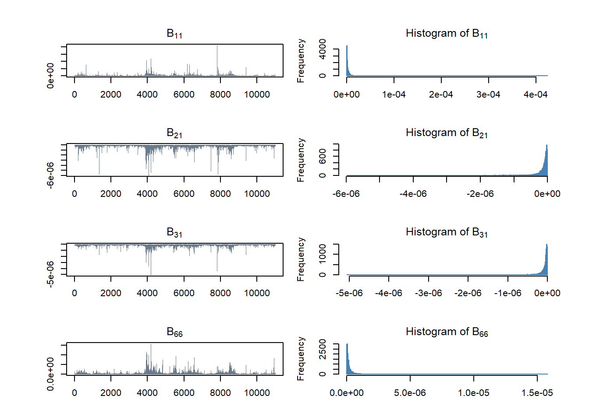

The Impact of Monetary Policy on the Real Economy and the Stock Market: The Case of Australia
Abstract. The purpose of this study is to investigate the relationship and impact of monetary policy on the real economy in Australia. The author uses quarterly data spanning from 1990 Q1 to 2023 Q4. The Structural Vector Autoregression (SVAR) model is used to capture the structural relationship, including analyzing the impulse responses of the variable of interest to structural shock.
Keywords. Structural VAR, SVAR, monetary policy, stock market, economic impact, impulse response function, Bayesian, cash rate
Introduction
This study aims to explore the dynamic impact of monetary policy on the real economy in Australia, specifically focusing on economic growth, prices, and employment. How does the real economy respond? What is the magnitude and the duration of change? The stock market price is included and can be considered a leading indicator of the real economy.
According to Economic theory, the transmission mechanism of monetary policy to the real economy takes time, as it does not have a fully immediate effect, but it involves some delays. Brischetto and Voss (1999) find that the contractionary of monetary policy in Australia leads to a decrease in output level between 5 and 15 quarters after the contraction. The price level also gradually falls with some delay with maximum effect, and there is an indication that the effect tends to be permanent. Mojon and Peersman (2001) also investigate the effect of monetary policy across 10 euro area countries and find that a contractionary monetary policy shock leads to a temporary fall in GDP that peaks typically around four quarters after the shock and a gradual decrease in the price level.
On the other hand, Bjørnland and Leitemo (2009) suggest that, due to the availability of information in financial market, the monetary policy and stock market have simultaneous effects. They also find that real stock prices immediately fall by seven to nine percent due to a monetary policy shock that raises the federal funds rate by 100 basis points. Similarly, Ioannidis and Kontonikas (2008) find that the majority of OECD countries under study, periods of tight money are associated with contemporaneous declines in stock market value and also decreases expected stock returns. Additionally, according to Bjørnland and Leitemo (2009), the changes in asset price, particularly stock price, ultimately impact the economic growth by increasing household spending based on their wealth and encouraging investment through the Tobin Q effect. The asset prices also play a role in firm’s ability to fund operations through credit channel. Hence, policymakers are motivated to track the asset price as short-run indicators.
Understanding insights of these dynamic impacts within the macroeconomy, including the magnitude and duration of impacts, enables the policymakers to precisely predict the outcomes on real economy that might occur after changing the new cash target rate.
Data
The variables in this study include the cash rate target (cashrate), which indicates the monetary policy. GDP (in real terms), CPI, and the unemployment rate (unemprate) are included to measure the real economy. For the stock market, the author uses the All Ordinaries index (AORD) as a representative. The AORD is the market-weighted index and includes about 500 companies from the Australian Stock Exchange. Finally, total government expenditure is included to control for fiscal policy, which might also affect the economy besides monetary policy. The data is collected from the Reserve Bank of Australia (RBA), Australian Bureau of Statistics (ABS), and Yahoo Finance. The dataset spans from 1990 Q1 to 2023 Q4, comprising 136 observations. Figure 1: time series plots (raw data) represents the raw data time series of these 6 variables.
Figure 1: time series plots (raw data)
The author transforms the data in manner that aligns with the purpose of study. The total government expenditure are adjusted to real terms using the GDP deflator. After that, the author transforms 4 variables which are real GDP, AORD, CPI, and real government expenditure in logarithms term, denoted by realgdp, stockprice, CPI, and govexp respectively. Figure 2: time series plots (transformed data) represents the transformed data, which will be analyzed further.

Figure 2: time series plots (transformed data)
The statistics summary of variables from 1990 Q1 to 2023 Q4 is shown in Table 1.
| N | Mean | St.Dev. | Min | Max | |
|---|---|---|---|---|---|
| cashrate | 136 | 4.589 | 2.864 | 0.100 | 16.750 |
| realgdp | 136 | 5.957 | 0.300 | 5.434 | 6.413 |
| CPI | 136 | 4.456 | 0.249 | 4.029 | 4.913 |
| unemprate | 136 | 6.355 | 1.880 | 3.497 | 11.216 |
| stockprice | 136 | 8.244 | 0.484 | 7.154 | 8.966 |
| govexp | 136 | 10.800 | 0.609 | 9.811 | 11.898 |
Preliminary Results
The autocorrelation and partial autocorrelation
In this section, the autocorrelation and partial autocorrelation analyses are used to detect patterns and check the randomness of time series. Figure 3: ACF plots show the autocorrelation remains in all variables, even after 5 years. This indicate the strong correlation between a time series and its lagged values.

Figure 3: ACF plots
For the PACF in Figure 4: PACF plots, it is observed that there have not been any significant spikes for all variables, except for unemprate. The PACF of unemprate indicates significance in partial autocorrelation at first and sixteenth quarter lags; however, this might occur due to a type I error.

Figure 4: PACF plots
The unit root test
In this section, the Augmented Dickey-Fuller Test (ADF Test) is used to test for the stationarity assumption. The null hypothesis is that the time series data has a unit root (non-stationary). The results are shown in Table 2. At the 1% significance level, the null hypothesis cannot be rejected for all variables, indicating that these variables are unit root non-stationary.
| Dickey-Fuller | Lag order | p-value | |
|---|---|---|---|
| cashrate | -3.77 | 5 | 0.02 |
| realgdp | -1.28 | 5 | 0.87 |
| CPI | -3.11 | 5 | 0.12 |
| unemprate | -2.61 | 5 | 0.32 |
| stockprice | -2.57 | 5 | 0.34 |
| govexp | -1.82 | 5 | 0.65 |
Then, take the first difference and the second difference of all variables and rerun the ADF test. The results are shown in Table 3 and Table 4. For the first difference in Table 3, at the 1% significance level, the null hypothesis can be rejected for all variables, except CPI and dgovexp. It is reasonable to conclude that cashrate, realgdp, unemprate, stockprice are integrated of order 1. And CPI and govexp are integrated of order 2, as shown in the result in Table 4.
| Dickey-Fuller | Lag order | p-value | |
|---|---|---|---|
| dcashrate | -4.26 | 5 | 0.01 |
| drealgdp | -5.73 | 5 | 0.01 |
| dCPI | -3.87 | 5 | 0.02 |
| dunemprate | -4.94 | 5 | 0.01 |
| dstockprice | -5.47 | 5 | 0.01 |
| dgovexp | -3.76 | 5 | 0.02 |
| Dickey-Fuller | Lag order | p-value | |
|---|---|---|---|
| ddcashrate | -7.20 | 5 | 0.01 |
| ddrealgdp | -8.20 | 5 | 0.01 |
| ddCPI | -6.05 | 5 | 0.01 |
| ddunemprate | -6.49 | 5 | 0.01 |
| ddstockprice | -7.55 | 5 | 0.01 |
| ddgovexp | -8.98 | 5 | 0.01 |
Methodology
In this section, the model that this study use to capture the structural relationship between real economy variables and the stock price is introduced. The author use Structural Vector Autoregression (SVAR) model which comprises of 6 variables, cashrate, realgdp, inflation, unemprate, stockprice, and govexp. Subsequently, the model will be used to analyze the impulse responses.
The SVAR model can be shown as follows.
\[\begin{align} B_0y_t &= b_0 + \sum_{i=1}^{p}B_{i}y_{t-i}+u_t \\ u_t|Y_{t-1}&\sim iid \mathcal{N} (0_N,I_N) \end{align}\]where :
\(y_{t}\) is \(N\times1\) vector of endogenous variables at time t
\(B_0\) is \(N\times N\) structural matrix which captures the contemporaneous relationships between variables
\(u_t\) is \(N\times1\) vector of conditionally on \(Y_{t-1}\) orthogonal or independent structural shocks
Specifically, \(y_{t}\) contains 6 variables as follows. \[ y_t = \begin{bmatrix} \text{cashrate} \\ \text{realgdp} \\ \text{CPI} \\ \text{unemprate} \\ \text{stockprice} \\ \text{govexp} \end{bmatrix} \]
The reduced form can be shown as follows.
\[\begin{align} y_t &= \mu_0 + \sum_{i=1}^{p}A_{i}y_{t-i}+\epsilon_t \\ \epsilon_t|Y_{t-1} &\sim iid \mathcal{N}(0_N,\Sigma) \end{align}\]where :
\(A_i\) is \(N\times N\) matrix of autoregressive slope parameters
\(\mu_0\) is \(N\times1\) vector of constant terms
\(\epsilon_t\) is \(N\times1\) vector of error terms - a multivariate white noise process
\(\Sigma\) is \(N\times N\) covariance matrix of the error term
Estimation algorithm with simulated data
The baseline model
Estimation algorithm
The reduced form above can be rewrite in the matrix form as follows:
\[\begin{align} Y &= XA + E \\ E|X &\sim \mathcal{MN}_{T \times N}(0,\Sigma,I_T) \end{align}\]Bayes’ rule is employed for deriving the posterior distribution
From Bayes’ rule:
\[\begin{align} P(A,\Sigma|Y,X) &\propto L(A,\Sigma|Y,X)P(A,\Sigma) \\ \underbrace{P(A,\Sigma|Y,X)}_{\text{Posterior distribution}} &\propto \underbrace{L(A,\Sigma|Y,X)}_{\text{Likelihood}} \underbrace{P(A|\Sigma)P(\Sigma)}_{\text{Prior distribution}} \end{align}\]The likelihood fuction
The derivation of the likelihood function can be shown in matrix-variate normal distribution as follows:
\[\begin{align} L(A,\Sigma|Y,X) = (2\pi)^{-\frac{NT}{2}} det(\Sigma)^{-\frac{T}{2}} exp \left\{-\frac{1}{2} tr \left[ \Sigma^{-1}(Y-XA)'(Y-XA) \right] \right\} \\ \end{align}\]Then, the \(\hat{A}\) and \(\hat{\Sigma}\) corresponding to the maximum likelihood are
\[\begin{align} \hat{A} &= (X'X)^{-1}X'Y \\ \hat{\Sigma} &= \frac{1}{T} (Y-X \hat{A})'(Y-X \hat{A}) \end{align}\]The likelihood function can be represented as Normal inverse Wishart distribution
\[\begin{align} L(A,\Sigma|Y,X) &\propto det(\Sigma)^{-\frac{T}{2}} exp \left\{-\frac{1}{2} tr \left[ \Sigma^{-1}(A-\hat{A})'X'X(Y-\hat{A}) \right] \right\} exp \left\{-\frac{1}{2} tr \left[ \Sigma^{-1}(Y-X\hat{A})'(Y-X\hat{A}) \right] \right\} \\ \end{align}\]The prior distribution
\[\begin{align} P(A,\Sigma) &= P(A|\Sigma) P(\Sigma) \\ A|\Sigma &\sim \mathcal{MN}_{K \times N} (\underline{A}, \Sigma , \underline{V}) \\ \Sigma &\sim \mathcal{IW}_{N}(\underline{S},\underline{\nu}) \end{align}\]The prior which follows Normal inverse Wishart distribution:
\[\begin{align} p(A,\Sigma) &\propto det(\Sigma)^{-\frac{N+K+\underline{\nu}+1}{2}} exp \left\{-\frac{1}{2} tr \left[ \Sigma^{-1}(A-\underline{A})'\underline{V}^{-1}(A-\underline{A}) \right] \right\} exp \left\{-\frac{1}{2} tr \left[ \Sigma^{-1}\underline{S} \right] \right\} \\ \end{align}\]The Minnesota prior used as prior of the model, the parameters are follows:
\[\begin{align} \underline{A} &= [0_{N \times 1} \quad I_N \quad 0_{N \times (p-1)N}]' \\ Var[vec(A)] &= \Sigma \otimes \underline{V} \\ \underline{V} &= \text{diag}([\kappa_2 \quad \kappa_1 (p^{-2} \otimes \imath_N)]) \\ \end{align}\]where:
\(p\) = [1,2,…,p]
\(\imath_N\) = [1,…,1]
\(\kappa_1\) is overall shrinkage level for autoregressive slopes, the common value is \(0.02^{2}\)
\(\kappa_2\) is overall shrinkage level for the constant term, the common value is \(100\)
This can be represented in code as follows:
Prior.Dist <- function (N,p,Sigma.hat,kappa.1,kappa.2) {
K <- 1 + N*p
A.prior <- matrix(0,K,N)
A.prior[2:(N+1),] <- diag(N)
V.prior <- diag(c(kappa.2,kappa.1*((1:p)^(-2))%x%rep(1,N)))
S.prior <- diag(diag(Sigma.hat))
nu.prior <- N+1
return (list(A.prior = A.prior,
V.prior = V.prior,
S.prior = S.prior,
nu.prior = nu.prior))
}The posterior distribution
From the Bayes’ rule mentioned above, the posterior distribution as follows:
\[\begin{align} P(A,\Sigma|Y,X) \propto & L(A,\Sigma|Y,X)P(A,\Sigma) \\ P(A,\Sigma|Y,X) \propto & det(\Sigma)^{-\frac{T}{2}} exp \left\{-\frac{1}{2} tr \left[ \Sigma^{-1}(A-\hat{A})'X'X(A-\hat{A}) \right] \right\} exp \left\{-\frac{1}{2} tr \left[ \Sigma^{-1}(Y-X\hat{A})'(Y-X\hat{A}) \right] \right\} \\ &det(\Sigma)^{-\frac{N+K+\underline{\nu}+1}{2}} exp \left\{-\frac{1}{2} tr \left[ \Sigma^{-1}(A-\underline{A})'\underline{V}^{-1}(A-\underline{A}) \right] \right\} exp \left\{-\frac{1}{2} tr \left[ \Sigma^{-1}\underline{S} \right] \right\} \\ P(A,\Sigma|Y,X) \propto & det(\Sigma)^{-\frac{T+N+K+\underline{\nu}+1}{2}} exp \left\{-\frac{1}{2} tr \left[ \Sigma^{-1}\left[(A-\hat{A})'X'X(A-\hat{A}) + (A-\underline{A})'\underline{V}^{-1}(A-\underline{A}) \\ +(Y-X\hat{A})'(Y-X\hat{A})+\underline{S})\right] \right] \right\} \\ \end{align}\]Which can represented in form of Normal inverse Wishart distribution
\[\begin{align} P(A,\Sigma|Y,X) &= P(A|Y,X,\Sigma) P(\Sigma|Y,X) \\ P(A|Y,X,\Sigma) &\sim \mathcal{MN}_{K \times N} (\overline{A}, \Sigma , \overline{V}) \\ P(\Sigma|Y,X) &\sim \mathcal{IW}_{N}(\overline{S},\overline{\nu}) \end{align}\]
And the posterior parameters are structured as follows.
This can be represented in code as follows:
Post.Dist <- function (X,Y,prior.parameters) {
A.prior <- prior.parameters$A.prior
V.prior <- prior.parameters$V.prior
S.prior <- prior.parameters$S.prior
nu.prior <- prior.parameters$nu.prior
V.bar.inv <- t(X)%*%X + diag(1/diag(V.prior))
V.bar <- solve(V.bar.inv)
A.bar <- V.bar%*%(t(X)%*%Y + diag(1/diag(V.prior))%*%A.prior)
nu.bar <- nrow(Y) + nu.prior
S.bar <- S.prior + t(Y)%*%Y + t(A.prior)%*%diag(1/diag(V.prior))%*%A.prior - t(A.bar)%*%V.bar.inv%*%A.bar
S.bar.inv <- solve(S.bar)
return (list(V.bar = V.bar,
A.bar = A.bar,
nu.bar = nu.bar,
S.bar = S.bar,
S.bar.inv = S.bar.inv,
V.bar.inv = V.bar.inv))
}The draws from the posterior distribution can be represented in code as follows:
Post.Draw <- function (N,S,p,posterior.parameters){
K = 1+N*p
A.bar <- posterior.parameters$A.bar
V.bar <- posterior.parameters$V.bar
S.bar <- posterior.parameters$S.bar
nu.bar <- posterior.parameters$nu.bar
S.bar.inv <- posterior.parameters$S.bar.inv
Sigma.posterior <- rWishart(S, df=nu.bar, Sigma=S.bar.inv)
Sigma.posterior <- apply(Sigma.posterior,3,solve)
Sigma.posterior <- array(Sigma.posterior,c(N,N,S))
A.posterior <- array(rnorm(prod(c(dim(A.bar),S))),c(dim(A.bar),S))
B0.tilde <- array(NA,c(N,N,S))
L <- t(chol(V.bar))
Bplus.tilde <- array(NA,c(N,K,S))
for (s in 1:S){
cholSigma.s <- chol(Sigma.posterior[,,s])
B0.tilde[,,s] <- solve(t(cholSigma.s))
A.posterior[,,s] <- A.bar + L%*%A.posterior[,,s]%*%cholSigma.s
Bplus.tilde[,,s] <- B0.tilde[,,s]%*%t(A.posterior[,,s])
}
return(list(A.posterior = A.posterior,
B0.tilde = B0.tilde,
Bplus.tilde = Bplus.tilde,
Sigma.posterior = Sigma.posterior)
)
}Data simulation
The author generates 1,000 observations from bi-variate Gaussian random walk process to prove that the algorithm works.

Figure 5: The simulation data (1,000 observations)
The target model for estimation is a Sign-Restricted Structural Vector Autoregression (SVAR).
\[\begin{align} B_0y_t &= b_0 + \sum_{i=1}^{p}B_{1}y_{t-1}+u_t \\ u_t|Y_{t-1}&\sim iid \mathcal{N} (0_N,I_N) \end{align}\]The author randomly draws matrices \(A\) and \(\Sigma\) from the posterior distribution, which is specified as a Normal Inverse Wishart distribution as described earlier. Following this, the sign restriction is applied to the main diagonal of matrix \(B_{0}\), ensuring positive signs.
ImposeSignRestriction <- function (restrictions,N,p,posterior.draws){
A.posterior <- posterior.draws$A.posterior
Sigma.posterior <- posterior.draws$Sigma.posterior
B0.tilde <- posterior.draws$B0.tilde
Bplus.tilde <- posterior.draws$Bplus.tilde
S <- dim(A.posterior)[3]
B0.store <- array(NA,c(N,N,S))
Bplus.store <- array(NA,c(N,K,S))
i.vec = c()
for (s in 1:S){
B0.tilde1 <- B0.tilde[,,s]
Bplus.tilde1 <- Bplus.tilde[,,s]
i=1
sign.restrictions.do.not.hold = TRUE
while (sign.restrictions.do.not.hold){
X <- matrix(rnorm(N*N),N,N)
QR <- qr(X, tol = 1e-10)
Q <- qr.Q(QR,complete=TRUE)
R <- qr.R(QR,complete=TRUE)
Q <- t(Q %*% diag(sign(diag(R))))
B0 <- Q%*%B0.tilde1
Bplus <- Q%*%Bplus.tilde1
B0.inv <- solve(B0)
check <- all(diag(B0)>0)
if (check){sign.restrictions.do.not.hold=FALSE}
i=i+1
}
i.vec <- c(i.vec,i)
B0.store[,,s] <- B0
Bplus.store[,,s] <- Bplus
}
return (list(B0.store = B0.store,
Bplus.store = Bplus.store,
i = i.vec))
}Table 5 shows that the mean values of matrix \(A\) at \(A_{11}\) and \(A_{22}\) are close to 1, while the constant term in the first row is nearly zero. Additionally, the variance-covariance matrix in Table 6 is approximately an identity matrix. These findings are consistent with our bi-variate Gaussian random walk process.
| RW1 | RW2 | |
|---|---|---|
| Cons | 0.0541001 | 0.0168892 |
| Lag1 | 0.9939796 | 0.0073920 |
| Lag2 | 0.0008390 | 0.9946839 |
| RW1 | RW2 | |
|---|---|---|
| R1 | 0.9629585 | -0.0117865 |
| R2 | -0.0117865 | 0.9409945 |
Table 7 displays that the mean values of the main diagonal elements in matrix \(B_{0}\) are positive, providing evidence for the validity of the imposed restriction.
| C1 | C2 | |
|---|---|---|
| R1 | 0.6523449 | 0.0008668 |
| R2 | 0.0164861 | 0.6602365 |
In Table 8 which displays the mean of matrix \(B_{+}\), the values in the first column, representing the constant term in the equation, are close to zero.
| C1 | C2 | C3 | |
|---|---|---|---|
| R1 | 0.0350624 | 0.6484145 | 0.0014121 |
| R2 | 0.0120368 | 0.0212601 | 0.6567357 |
The extension model
Estimation algorithm
Suppose the author aims to enhance the flexibility of the prior distribution for gamma (\(\gamma\)) by modeling it in the following manner.
\[\begin{align} \color{Grey}P(A,\Sigma\color{Black}|\gamma) &= \color{Grey}P(A|\Sigma) P(\Sigma\color{Black}|\gamma) \\ \color{Grey}A|\Sigma &\sim \color{Grey}\mathcal{MN}_{K \times N} \color{Grey}(\underline{A}, \Sigma , \underline{V}) \\ \color{Black}\Sigma|\gamma &\sim \mathcal{IW}_{N}(\gamma I_{N},\underline{\nu}) \\ \gamma &\sim \mathcal{IG2} (\underline{S},\underline{\nu}) \end{align}\]Thus, the the posterior distribution as follows:
\[\begin{align} P(A,\Sigma|Y,X,\gamma) \propto & L(A,\Sigma|Y,X,\gamma)P(A,\Sigma) \\ P(A,\Sigma|Y,X,\gamma) \propto & L(A,\Sigma|Y,X,\gamma)P(A|\Sigma) P(\Sigma|\gamma) \\ P(A,\Sigma|Y,X,\gamma) \propto & det(\Sigma)^{-\frac{T}{2}} exp \left\{-\frac{1}{2} tr \left[ \Sigma^{-1}(A-\hat{A})'X'X(A-\hat{A}) \right] \right\} exp \left\{-\frac{1}{2} tr \left[ \Sigma^{-1}(Y-X\hat{A})'(Y-X\hat{A}) \right] \right\} \\ &det(\Sigma)^{-\frac{N+K+\underline{\nu}+1}{2}} exp \left\{-\frac{1}{2} tr \left[ \Sigma^{-1}(A-\underline{A})'\underline{V}^{-1}(A-\underline{A}) \right] \right\} exp \left\{-\frac{1}{2} tr \left[ \Sigma^{-1}\gamma I_{N} \right] \right\} \\ P(A,\Sigma|Y,X,\gamma) \propto & det(\Sigma)^{-\frac{T+N+K+\underline{\nu}+1}{2}} exp \left\{-\frac{1}{2} tr \left[ \Sigma^{-1}\left[(A-\hat{A})'X'X(A-\hat{A}) + (A-\underline{A})'\underline{V}^{-1}(A-\underline{A}) \\ +(Y-X\hat{A})'(Y-X\hat{A})+\gamma I_{N}\right] \right] \right\} \\ \end{align}\]The distribution represented in the form of Normal Inverse Wishart is characterized by the following parameters:
\[\begin{align} \overline{V} &= (X'X+ \underline{V}^{-1})^{-1} \\ \overline{A} &= \overline{V}(X'Y+\underline{V}^{-1} \underline{A})\\ \overline{\nu} &= T+\underline{\nu}\\ \overline{S} &= \gamma I_{N}+Y'Y + \underline{A}'\underline{V}^{-1}\underline{A} - \overline{A}'\overline{V}^{-1}\overline{A} \\ \end{align}\]The posterior distribution of \(\gamma\) is also needed as it serves as a crucial component for the sampling procedure.
\[\begin{align} P(\gamma|A,\Sigma,Y,X) \propto & L(Y|\Sigma,X,A)P(\gamma)P(A,\Sigma)P(\Sigma|\gamma) \\ \propto & P(\gamma)P(\Sigma|\gamma) \\ = & \gamma^{-\frac{\underline{\nu}+2}{2}}\:exp\left\{{-\frac{1}{2}\frac{\underline{S}}{\lambda}} \right\} \:det(\gamma I_{N})^{\frac{\underline{\nu}}{2}}\:det(\Sigma)^{-\frac{\underline{\nu}+N+1}{2}}\:exp\left\{{-\frac{1}{2}tr[\Sigma^{-1}\gamma I_{N}]} \right\} \\ = &\gamma^{-\frac{\underline{\nu}+2}{2}}\:exp\left\{{-\frac{1}{2}\frac{\underline{S}}{\gamma}} \right\}\:\gamma^{-\frac{N\underline{\nu}}{2}}\:det(\Sigma)^{\frac{\underline{\nu}+N+1}{2}}\:exp\left\{{-\frac{1}{2}\gamma \:tr[\Sigma^{-1}]} \right\} \\ \propto &\gamma^{\frac{N\underline{\nu}-\underline{\nu}}{2}-1} \: exp\left\{{-\frac{1}{2}}[\gamma\:tr[\Sigma^{-1}]+{\frac{\underline{S}}{\gamma}}]\right\} \\ \end{align}\]The following distribution conforms to the Generalized Inverse Gaussian (GIG) distribution, with the parameters as follows:
\[\begin{align} \lambda = {\frac{N\underline{\nu}-\underline{\nu}}{2}} \\ \\ \chi = \underline{S}\\ \\ \psi = tr[\Sigma^{-1}] \end{align}\]The Gibbs Sampler is used to get the posterior draws of the extended model
For \(S_{1} = 1,000\) and \(S_{2} = 9,000\)
Initialize \(\gamma\) at \(\gamma^{(0)}\)
At each iteration:
- Draw \(\Sigma^{(s)} \sim P(\Sigma|Y,X,\gamma^{(s-1)})\)
- Draw \(A^{(s)}\sim P(A|\Sigma^{(s)},Y,X)\)
- Draw \(\gamma^{(s)} \sim P(\gamma|Y,X,A^{(s)},\Sigma^{(s)})\)
Repeat steps 1 to 3 for \(S_{1}\) + \(S_{2}\) iterations
Discard the first \(S_{1}\) iterations to allow the algorithm to converge to the stationary state.
The author then utilizes the random draws from \(\Sigma^{(s)}, A^{(s)}, \gamma^{(s)}\) to obtain the posterior draw and create the following \(B_{0}\) and \(B_{+}\) matrices.
This can be represented in code as follows:
Gibbsampler.Extension <- function(Y, prior.parameters, posterior.parameters, S1, S2, N, K) {
A.prior <- prior.parameters$A.prior
V.prior <- prior.parameters$V.prior
nu.prior <- prior.parameters$nu.prior
S.prior <- prior.parameters$S.prior
A.bar <- posterior.parameters$A.bar
V.bar <- posterior.parameters$V.bar
V.bar.inv <- posterior.parameters$V.bar.inv
nu.bar <- posterior.parameters$nu.bar
# Initialize variables
S.bar <- array(0, dim = c(N, N, (S1+S2)))
S.bar.inv <- array(0, dim = c(N, N, (S1+S2)))
gamma.store <- numeric(S1+S2)
gamma.store[1] <- 1
A.posterior <- array(0, dim = c(K, N, (S1+S2)))
B0.tilde <- array(0, dim = c(N, N, (S1+S2)))
Bplus.tilde <- array(0, dim = c(N, K, (S1+S2)))
Sigma.store <- array(0, dim = c(N, N, (S1+S2)))
i.vec = c()
for (i in 1:(S1+S2)) {
# Calculate S.bar
S.bar[,,i] <- gamma.store[i] * diag(N) + t(Y) %*% Y + t(A.prior) %*% diag(1/diag(V.prior)) %*% A.prior - t(A.bar) %*% V.bar.inv %*% A.bar
S.bar.inv[,,i] <- solve(S.bar[,,i])
# Generate posterior samples using rWishart
Sigma.posterior <- rWishart(1, df = nu.bar, Sigma = S.bar.inv[,,i])
Sigma.posterior <- apply(Sigma.posterior, 3, solve)
Sigma.posterior <- array(Sigma.posterior, c(N, N, 1))
Sigma.store[,,i] <- Sigma.posterior[,,1]
cholSigma.s <- chol(Sigma.posterior[,,1])
L <- t(chol(V.bar))
A.posterior[,,i] <- A.bar + L %*% A.posterior[,,i] %*% cholSigma.s
# Compute lambda, chi, and psi
lambda <- ((nu.prior * N) - nu.prior) / 2
chi <- S.prior
psi <- sum(diag(solve(Sigma.posterior[,,1])))
# Generate gamma using rgig
gamma.store[i] <- GIGrvg::rgig(n = 1, lambda, chi, psi)
# Update B0.tilde and Bplus.tilde
B0.tilde[,,i] <- solve(t(cholSigma.s))
Bplus.tilde[,,i] <- B0.tilde[,,i] %*% t(A.posterior[,,i])
}
return(list(A.posterior = A.posterior[,,S1:(S1+S2)],
gamma.store = gamma.store[S1:(S1+S2)],
B0.tilde = B0.tilde[,,S1:(S1+S2)],
Bplus.tilde = Bplus.tilde[,,S1:(S1+S2)],
Sigma.posterior = Sigma.store[,,S1:(S1+S2)],
i = i.vec))
}Data simulation
Table 9 shows that the mean values of matrix \(A\) and the variance-covariance matrix in Table 10 exhibit behavior similar to that of the basic model.
| RW1 | RW2 | |
|---|---|---|
| Cons | 0.0538050 | 0.0170952 |
| Lag1 | 0.9939738 | 0.0073219 |
| Lag2 | 0.0008760 | 0.9946915 |
| RW1 | RW2 | |
|---|---|---|
| R1 | 0.9620004 | -0.0124727 |
| R2 | -0.0124727 | 0.9422852 |
Table 11 indicates that the mean value of the main diagonal of \(B_{0}\) remains positive, exhibiting a similar behavior to that of the basic model.
| C1 | C2 | |
|---|---|---|
| R1 | 0.6456414 | 0.0102519 |
| R2 | 0.0078336 | 0.6525126 |
In Table 12 which displays the mean of matrix \(B_{+}\), the values in the first column, representing the constant term in the equation, are close to zero and exhibit a behavior similar to that of the basic model.
| C1 | C2 | C3 | |
|---|---|---|---|
| R1 | 0.0349140 | 0.6418257 | 0.0107630 |
| R2 | 0.0115763 | 0.0125640 | 0.6490555 |
The mean of \(\gamma\) is equal 1.8067 and the trace plot and histogram shown in Figure 6.

Figure 6: The plot and histogram of gamma (The extension model)
Stochastic Volatility Heteroskedasticity
Estimation algorithm
Next, the author will estimate the model with stochastic volatility. This approach allows for the capture of time-varying volatility in the data. The model will be applied to both the baseline model and the extension model.
The reduced form above can be rewrite in the matrix form as follows:
\[\begin{align} Y &= XA + E \\ E|X &\sim \mathcal{MN}_{T \times N}(0,\Sigma,diag(\sigma^{2})) \end{align}\]Where \(\sigma^{2} = (exp\{h_{1}\},exp\{h_{2}\},\cdots, exp\{h_{T}\})\) which is a vector of conditional heteroskedasticity variables and \(h_{t}\) follows a stochastic volatility process.
Thus, the likelihood can be rewrite as
\[\begin{align} L(A,\Sigma|Y,X,\sigma^{2}) \propto det(diag(\sigma^{2}))^{-\frac{N}{2}} det(\Sigma)^{-\frac{T}{2}} exp \left\{-\frac{1}{2} tr \left[ \Sigma^{-1}(Y-XA)'(diag(\sigma^{2}))^{-1}(Y-XA) \right] \right\} \\ \end{align}\]The baseline model
The full conditional posterior for the baseline model is in the form of a Normal Inverse Wishart distribution, with posterior parameters structured as follows.
\[\begin{align} \overline{V} &= (X'(diag(\sigma^{2})^{-1}X+ \underline{V}^{-1})^{-1} \\ \overline{A} &= \overline{V}(X'(diag(\sigma^{2})^{-1}Y+\underline{V}^{-1} \underline{A})\\ \overline{\nu} &= T+\underline{\nu}\\ \overline{S} &= \underline{S}+Y'(diag(\sigma^{2})^{-1}Y + \underline{A}'\underline{V}^{-1}\underline{A} - \overline{A}'\overline{V}^{-1}\overline{A} \\ \end{align}\]The Gibbs Sampler is used to get the posterior draws of the stochastic volatility model.
For \(S_{1} = 1,000\) and \(S_{2} = 9,000\)
Initialize \(\sigma^{2}\) at \(\sigma^{2^{(0)}}\)
At each iteration s:
- Draw \((A,\Sigma)^{(s)} \sim P(A,\Sigma|Y,X,\sigma^{2^{(s-1)}})\)
- Draw \(\sigma^{2^{(s)}} \sim P(\sigma^{2}|Y,X,A^{(s)},\Sigma^{(s)})\)
Repeat step 1 and 2 for \((S_{1} + S_{2})\) times, then discard the first \(S_{1}\) iterations to allow the algorithm to converge to the equilibrium state.
The function for drawing \(\sigma^{2^{(s)}} \sim P(\sigma^{2}|Y,X,A^{(s)},\Sigma^{(s)})\) is as follows.
SVcommon.Gibbs.iteration = function(aux, priors){
# A single iteration of the Gibbs sampler for the SV component
#
# aux is a list containing:
# Y - a TxN matrix
# X - a TxK matrix
# H - a Tx1 matrix
# h0 - a scalar
# sigma.v2 - a scalar
# s - a Tx1 matrix
# A - a KxN matrix
# Sigma - an NxN matrix
# sigma2 - a Tx1 matrix
#
# priors is a list containing:
# h0.v - a positive scalar
# h0.m - a scalar
# sigmav.s - a positive scalar
# sigmav.nu - a positive scalar
# HH - a TxT matrix
T <- dim(aux$Y)[1]
N <- dim(aux$Y)[2]
alpha.st <- c(1.92677,1.34744,0.73504,0.02266,0-0.85173,-1.97278,-3.46788,-5.55246,-8.68384,-14.65000)
sigma.st <- c(0.11265,0.17788,0.26768,0.40611,0.62699,0.98583,1.57469,2.54498,4.16591,7.33342)
pi.st <- c(0.00609,0.04775,0.13057,0.20674,0.22715,0.18842,0.12047,0.05591,0.01575,0.00115)
Lambda <- solve(chol(aux$Sigma))
Z <- rowSums((aux$Y - aux$X %*% aux$A ) %*% Lambda) / sqrt(N)
Y.tilde <- as.vector(log((Z + 0.0000001)^2))
Ytilde.alpha <- as.matrix(Y.tilde - alpha.st[as.vector(aux$s)])
# sampling initial condition
############################################################
V.h0.bar <- 1/((1 / priors$h0.v) + (1 / aux$sigma.v2))
m.h0.bar <- V.h0.bar*((priors$h0.m / priors$h0.v) + (aux$H[1] / aux$sigma.v2))
h0.draw <- rnorm(1, mean = m.h0.bar, sd = sqrt(V.h0.bar))
aux$h0 <- h0.draw
# sampling sigma.v2
############################################################
sigma.v2.s <- priors$sigmav.s + sum(c(aux$H[1] - aux$h0, diff(aux$H))^2)
sigma.v2.draw <- sigma.v2.s / rchisq(1, priors$sigmav.nu + T)
aux$sigma.v2 <- sigma.v2.draw
# sampling auxiliary states
############################################################
Pr.tmp <- simplify2array(lapply(1:10,function(x){
dnorm(Y.tilde, mean = as.vector(aux$H + alpha.st[x]), sd = sqrt(sigma.st[x]), log = TRUE) + log(pi.st[x])
}))
Pr <- t(apply(Pr.tmp, 1, function(x){exp(x - max(x)) / sum(exp(x - max(x)))}))
s.cum <- t(apply(Pr, 1, cumsum))
r <- matrix(rep(runif(T), 10), ncol = 10)
ss <- apply(s.cum < r, 1, sum) + 1
aux$s <- as.matrix(ss)
# sampling log-volatilities using functions for tridiagonal precision matrix
############################################################
Sigma.s.inv <- diag(1 / sigma.st[as.vector(aux$s)])
D.inv <- Sigma.s.inv + (1 / aux$sigma.v2) * priors$HH
b <- as.matrix(Ytilde.alpha / sigma.st[as.vector(aux$s)] + (aux$h0/aux$sigma.v2)*diag(T)[,1])
lead.diag <- diag(D.inv)
sub.diag <- mgcv::sdiag(D.inv, -1)
D.chol <- mgcv::trichol(ld = lead.diag, sd = sub.diag)
D.L <- diag(D.chol$ld)
mgcv::sdiag(D.L,-1) = D.chol$sd
x <- as.matrix(rnorm(T))
a <- forwardsolve(D.L, b)
draw <- backsolve(t(D.L), a + x)
aux$H <- as.matrix(draw)
aux$sigma2 <- as.matrix(exp(draw))
return(aux)
}And the function for drawing \((A,\Sigma)^{(s)} \sim P(A,\Sigma|Y,X,\sigma^{2^{(s-1)}})\) is as follows.
Post.draws.stochastic <- function (Y,X,prior.parameters.stochastic,S1,S2) {
N <- ncol(Y)
K <- ncol(X)
T <- nrow(Y)
A.prior <- prior.parameters.stochastic$A.prior
V.prior <- prior.parameters.stochastic$V.prior
S.prior <- prior.parameters.stochastic$S.prior
nu.prior <- prior.parameters.stochastic$nu.prior
A.posterior <- array(NA,c(K,N,(S1+S2)))
Sigma.posterior <- array(NA,c(N,N,(S1+S2)))
H.posterior <- array(NA,c(nrow(Y),(S1+S2+1)))
B0.tilde <- array(NA,c(N,N,(S1+S2)))
Bplus.tilde <- array(NA,c(N,K,(S1+S2)))
H.posterior[,1] <- matrix(1,T,1)
HH <- 2*diag(T)
mgcv::sdiag(HH,-1) <- -1
mgcv::sdiag(HH,1) <- -1
priors = list(HH = HH,
h0.m = 0,
h0.v = 1,
sigmav.s = 1,
sigmav.nu= 1
)
for (s in 1:(S1+S2)){
V.bar.inv <- t(X)%*%diag(1/H.posterior[,s])%*%X + diag(1/diag(V.prior))
V.bar <- solve(V.bar.inv)
A.bar <- V.bar%*%(t(X)%*%diag(1/H.posterior[,s])%*%Y + diag(1/diag(V.prior))%*%A.prior)
nu.bar <- nrow(Y) + nu.prior
S.bar <- S.prior + t(Y)%*%diag(1/H.posterior[,s])%*%Y + t(A.prior)%*%diag(1/diag(V.prior))%*%A.prior - t(A.bar)%*%V.bar.inv%*%A.bar
S.bar.inv <- solve(S.bar)
Sigma.inv.posterior <- rWishart(1, df = nu.bar, Sigma = S.bar.inv)
Sigma.posterior.draw <- apply(Sigma.inv.posterior, 3, solve)
Sigma.posterior[,,s] <- Sigma.posterior.draw
cholSigma.s <- chol(Sigma.posterior[,,s])
A.posterior[,,s] <- matrix(MASS::mvrnorm(1, as.vector(A.bar), Sigma.posterior[,,s]%x%V.bar),ncol=N)
L <- t(chol(V.bar))
B0.tilde[,,s] <- solve(t(cholSigma.s))
Bplus.tilde[,,s] <- B0.tilde[,,s]%*%t(A.posterior[,,s])
if (s == 1){
aux = list(
Y = Y,
X = X,
H = matrix(1,T,1),
h0 = 0,
sigma.v2 = 1,
s = matrix(1,T,1),
Sigma = Sigma.posterior[,,s],
A = A.posterior[,,s],
sigma2 = matrix(1,T,1)
)
}else{
aux = list(
Y = Y,
X = X,
H = tmp$H,
h0 = tmp$h0,
sigma.v2 = tmp$sigma.v2,
s = tmp$s,
Sigma = Sigma.posterior[,,s],
A = A.posterior[,,s],
sigma2 = tmp$sigma2
)
}
tmp <- SVcommon.Gibbs.iteration(aux,priors)
H.posterior[,s+1] <- as.matrix(tmp$sigma2)
}
return(list(Sigma.posterior = Sigma.posterior[,,(S1+1):(S1+S2)],
A.posterior = A.posterior[,,(S1+1):(S1+S2)],
Bplus.tilde = Bplus.tilde[,,(S1+1):(S1+S2)],
B0.tilde = B0.tilde[,,(S1+1):(S1+S2)],
H.sv = H.posterior[,(S1+2):(S1+S2+1)]))
}The extension model
The posterior parameters from the full conditional posterior for the extension model structured as follows.
\[\begin{align} \overline{V} &= (X'(diag(\sigma^{2})^{-1}X+ \underline{V}^{-1})^{-1} \\ \overline{A} &= \overline{V}(X'(diag(\sigma^{2})^{-1}Y+\underline{V}^{-1} \underline{A})\\ \overline{\nu} &= T+\underline{\nu}\\ \overline{S} &= \gamma I_{N} + Y'(diag(\sigma^{2})^{-1}Y + \underline{A}'\underline{V}^{-1}\underline{A} - \overline{A}'\overline{V}^{-1}\overline{A} \\ \end{align}\]The Gibbs Sampler is used to get the posterior draws of the stochastic volatility model.
For \(S_{1} = 1,000\) and \(S_{2} = 9,000\)
Initialize \(\sigma^{2}\) at \(\sigma^{2^{(0)}}\) and \(\gamma\) at \(\gamma^{(0)}\)
At each iteration s:
- Draw \(\Sigma^{(s)} \sim P(\Sigma|Y,X,\gamma^{(s-1)},\sigma^{2^{(s-1)}})\)
- Draw \(A^{(s)}\sim P(A|\Sigma^{(s)},Y,X,\sigma^{2^{(s-1)}})\)
- Draw \(\gamma^{(s)} \sim P(\gamma|Y,X,A^{(s)},\Sigma^{(s)},\sigma^{2^{(s-1)}})\)
- Draw \(\sigma^{2^{(s)}} \sim P(\sigma^{2}|Y,X,A^{(s)},\Sigma^{(s)},\gamma^{(s)})\)
Repeat step 1 to 4 for \((S_{1} + S_{2})\) times, then discard the first \(S_{1}\) iterations to allow the algorithm to converge to the equilibrium state.
The function for drawing \(\sigma^{2^{(s)}} \sim P(\sigma^{2}|Y,X,A^{(s)},\Sigma^{(s)},\gamma^{(s)})\) is the same as in the baseline model since \(\gamma\) does not affect the distribution, while the function for drawing steps 1 to 3 is as follows.
Post.draws.stochastic.extension <- function (Y,X,prior.parameters.stochastic,S1,S2) {
N <- ncol(Y)
K <- ncol(X)
T <- nrow(Y)
A.prior <- prior.parameters.stochastic$A.prior
V.prior <- prior.parameters.stochastic$V.prior
S.prior <- prior.parameters.stochastic$S.prior
nu.prior <- prior.parameters.stochastic$nu.prior
A.posterior <- array(NA,c(K,N,(S1+S2)))
Sigma.posterior <- array(NA,c(N,N,(S1+S2)))
H.posterior <- array(NA,c(nrow(Y),(S1+S2+1)))
B0.tilde <- array(NA,c(N,N,(S1+S2)))
Bplus.tilde <- array(NA,c(N,K,(S1+S2)))
gamma.store <- numeric(S1+S2)
H.posterior[,1] <- matrix(1,T,1)
HH <- 2*diag(T)
mgcv::sdiag(HH,-1) <- -1
mgcv::sdiag(HH,1) <- -1
nu.bar <- nrow(Y) + nu.prior
priors = list(HH = HH,
h0.m = 0,
h0.v = 1,
sigmav.s = 1,
sigmav.nu= 1
)
for (s in 1:(S1+S2)){
V.bar.inv <- t(X)%*%diag(1/H.posterior[,s])%*%X + diag(1/diag(V.prior))
V.bar <- solve(V.bar.inv)
A.bar <- V.bar%*%(t(X)%*%diag(1/H.posterior[,s])%*%Y + diag(1/diag(V.prior))%*%A.prior)
S.bar <- gamma.store[s] * diag(N) + t(Y)%*%diag(1/H.posterior[,s])%*%Y + t(A.prior)%*%diag(1/diag(V.prior))%*%A.prior - t(A.bar)%*%V.bar.inv%*%A.bar
Sigma.inv.posterior <- rWishart(1, df = nu.bar, Sigma = solve(S.bar))
Sigma.posterior.draw <- apply(Sigma.inv.posterior, 3, solve)
Sigma.posterior[,,s] <- Sigma.posterior.draw
cholSigma.s <- chol(Sigma.posterior[,,s])
A.posterior[,,s] <- matrix(MASS::mvrnorm(1, as.vector(A.bar), Sigma.posterior[,,s]%x%V.bar),ncol=N)
L <- t(chol(V.bar))
lambda <- ((nu.prior * N) - nu.prior) / 2
chi <- S.prior
psi <- sum(diag(solve(Sigma.posterior[,,1])))
gamma.store[s] <- GIGrvg::rgig(n = 1, lambda, chi, psi)
B0.tilde[,,s] <- solve(t(chol(Sigma.posterior[,,s])))
Bplus.tilde[,,s] <- B0.tilde[,,s]%*%t(A.posterior[,,s])
if (s == 1){
aux = list(
Y = Y,
X = X,
H = matrix(1,T,1),
h0 = 0,
sigma.v2 = 1,
s = matrix(1,T,1),
Sigma = Sigma.posterior[,,s],
A = A.posterior[,,s],
sigma2 = matrix(1,T,1),
gamma = 1
)
}else{
aux = list(
Y = Y,
X = X,
H = tmp$H,
h0 = tmp$h0,
sigma.v2 = tmp$sigma.v2,
s = tmp$s,
Sigma = Sigma.posterior[,,s],
A = A.posterior[,,s],
sigma2 = tmp$sigma2,
gamma = gamma.store[s]
)
}
tmp <- SVcommon.Gibbs.iteration(aux,priors)
H.posterior[,s+1] <- as.matrix(tmp$sigma2)
}
return(list(Sigma.posterior = Sigma.posterior[,,(S1+1):(S1+S2)],
A.posterior = A.posterior[,,(S1+1):(S1+S2)],
Bplus.tilde = Bplus.tilde[,,(S1+1):(S1+S2)],
B0.tilde = B0.tilde[,,(S1+1):(S1+S2)],
H.sv = H.posterior[,(S1+2):(S1+S2+1)],
gamma.store = gamma.store[(S1+1):(S1+S2)]))
}Data simulation
The baseline model
Table 13 demonstrates that the mean values of matrix \(A\) remain consistent with those in previous models. However, in Table 14, the variance-covariance matrix has main diagonal values that are nearly zero, deviating significantly from an identity matrix. This contrasts with the model that does not incorporate stochastic volatility.
| RW1 | RW2 | |
|---|---|---|
| Cons | 0.0641643 | -0.0642222 |
| Lag1 | 0.9996140 | 0.0003173 |
| Lag2 | 0.0001629 | 0.9995067 |
| RW1 | RW2 | |
|---|---|---|
| R1 | 0.0019742 | -0.0002025 |
| R2 | -0.0002025 | 0.0018550 |
The trace plot in Figure 7 confirms that the value of \(A_{21}\) and \(A_{32}\) oscillate around 1, while \(\Sigma_{11}\) and \(\Sigma_{22}\) oscillate around 0.002.
Figure 7: The trace plot of A and Sigma (The baseline with stochastic volatility model)
Table 15 indicates that the mean value of the main diagonal of \(B_{0}\) increase to around 14-15 which is significantly higher to the previous two models.
| C1 | C2 | |
|---|---|---|
| R1 | 14.50806 | 1.95236 |
| R2 | 1.13461 | 14.92466 |
In Table 16 which indicate the mean of the matrix \(B_{+}\), the values in the first column, representing the constant term in the equation, are noticeably different from zero compared to the previous models.
| C1 | C2 | C3 | |
|---|---|---|---|
| R1 | 0.7963876 | 14.503023 | 1.95330 |
| R2 | -0.8912159 | 1.139118 | 14.91747 |
The trace plot and histogram in Figure 8 show that the values of \(B_{11}\) and \(B_{22}\) are widely spread from 0 to around 25, but all of them are positive, consistent with the imposed restriction.

Figure 8: The trace plot and histogram of B0 matrix (The baseline with stochastic volatility model)
The posterior draw mean of \(\sigma^{2}\) for each of period display in Figure 9. The \(\sigma^{2}\) moves around 2000.

Figure 9: The posterior mean of the stochastic volatility
Table 17 shows that the mean values of matrix \(A\) for lag 1 and lag 2 are equal 1, and the constant value is close to zero. Moreover, in Table 18, the variance-covariance matrix is very closely to zero.
The extension model
| RW1 | RW2 | |
|---|---|---|
| Cons | 1.09e-05 | -9.4e-06 |
| Lag1 | 1.00e+00 | 0.0e+00 |
| Lag2 | 0.00e+00 | 1.0e+00 |
| RW1 | RW2 | |
|---|---|---|
| R1 | 1e-10 | -1e-10 |
| R2 | -1e-10 | 1e-10 |
The trace plot and histogram depicted in Figure 10 indicate that the values of \(A_{21}\) and \(A_{32}\) fluctuate around 1, whereas \(\Sigma_{11}\) and \(\Sigma_{22}\) are nearly zero.

Figure 10: The trace plot of A and Sigma (The extension with stochastic volatility model)
Table 19 indicates that the mean value of the matrix \(B_{0}\) is notably elevated, which diverges markedly from all previous models. And the mean value of the matrix \(B_{+}\) display in Table 20.
| C1 | C2 | |
|---|---|---|
| R1 | 512367.8 | 336463.5 |
| R2 | 337738.0 | 527123.4 |
| C1 | C2 | C3 | |
|---|---|---|---|
| R1 | 0.0162006 | 512367.8 | 336463.5 |
| R2 | -0.0673843 | 337738.0 | 527123.4 |
The trace plot and histogram in Figure 11 reveal that the values of \(B_{11}\) and \(B_{22}\) span widely from zero to approximately million, confirming the high mean value reported in Table 19.
Figure 11: The trace plot and histogram of B0 matrix (The extension with stochastic volatility model)
The mean value of \(\gamma\) is equal 1.8238, which is close to that of the extension model without incorporating stochastic volatility heteroskedasticity. The plot and histogram shown in Figure 12.

Figure 12: The plot and histogram of gamma (The extension with stochastic volatility model)
The posterior draw mean of \(\sigma^{2}\) for each of period is displayed in Figure 13. For certain periods, \(\sigma^{2}\) exhibits a significant increase to a very large value.
Figure 13: The posterior mean of the stochastic volatility (The extension with stochastic volatility model)
Once we prove that the algorithm and coding can work with the simulated random walk data, the author will apply the same procedure to the empirical data, which contains 6 variables as indicated in the methodology section.
Empirical estimation
The sign restriction that the author want to impose is applied to the contemporaneous shock or matrix \(B_{0}^{-1}\) which is attached to the \(u_{t}\) after transforming the SVAR model equation.
\[\begin{align} B_0y_t &= b_0 + \sum_{i=1}^{p}B_{i}y_{t-i}+u_t \\ y_t &= B_0^{-1}b_0 + \sum_{i=1}^{p}B_0^{-1}B_{i}y_{t-i} + B_0^{-1}u_t \end{align}\]However, the SVAR model can be estimated after estimating the reduced form. To obtain the matrices \(A\) and \(\Sigma\) from the reduced form, the author uses the same technique as when dealing with the simulation data, which involves randomly drawing both matrices from the posterior distribution.
One of the changes is the prior value of \(\kappa_{1}\), which represents the overall shrinkage level of the autoregressive slope. Formerly, for the simulation data, the author used \(0.02^{2}\), indicating very strong shrinkage. In this section, the author will loosen the shrinkage to 1 (no shrinkage).
The sign restriction for the monetary policy shock using Taylor’s rule is as follows.
| cashrate | realgdp | CPI | unemprate | stockprice | govexp | |
|---|---|---|---|---|---|---|
| monetary policy shock | + | - | - |
A monetary policy shock that raises the cash rate target will cool down inflationary pressures (leading to a decrease in CPI) and also slow down economic growth (resulting in a decrease in realgdp).
As mentioned earlier, this study includes govexp as a control variable for fiscal policy in the model. The sign restriction is imposed on govexp itself, indicating an increase in government expenditure.
| cashrate | realgdp | CPI | unemprate | stockprice | govexp | |
|---|---|---|---|---|---|---|
| fiscal policy shock | + |
Or can be represented in the compact form as follows.
\[\begin{bmatrix} \text{cashrate} \\ \text{realgdp} \\ \text{CPI} \\ \text{unemprate} \\ \text{stockprice} \\ \text{govexp} \end{bmatrix} = \underbrace{\begin{bmatrix} + && \color{Grey}? && \color{Grey}? && \color{Grey}? && \color{Grey}? && \color{Grey}? \\ - && \color{Grey}? && \color{Grey}? && \color{Grey}? && \color{Grey}? && \color{Grey}? \\ - && \color{Grey}? && \color{Grey}? && \color{Grey}? && \color{Grey}? && \color{Grey}? \\ \color{Grey}? && \color{Grey}? && \color{Grey}? && \color{Grey}? && \color{Grey}? && \color{Grey}? \\ \color{Grey}? && \color{Grey}? && \color{Grey}? && \color{Grey}? && \color{Grey}? && \color{Grey}? \\ \color{Grey}? && \color{Grey}? && \color{Grey}? && \color{Grey}? && \color{Grey}? && + \\ \end{bmatrix}}_{B_{0}^{-1}} * \begin{bmatrix} {u_{t}^{monetary\:pol.}} \\ {\color{Grey}u_{\color{Grey}t}}^{\color{Grey}2} \\ {\color{Grey}u_{\color{Grey}t}}^{\color{Grey}3} \\ {\color{Grey}u_{\color{Grey}t}}^{\color{Grey}4} \\ {\color{Grey}u_{\color{Grey}t}}^{\color{Grey}5} \\ {u_{t}^{fiscal\:pol.}} \end{bmatrix} \]Since the restriction on the simulated data has been changed, the new function can be represented as follows:
ImposeSignRestriction.empirical <- function (N,p,posterior.draws, S){
A.posterior <- posterior.draws$A.posterior
Sigma.posterior<- posterior.draws$Sigma.posterior
B0.tilde <- posterior.draws$B0.tilde
Bplus.tilde <- posterior.draws$Bplus.tilde
S <- dim(A.posterior)[3]
B0.store <- array(NA,c(N,N,S))
Bplus.store <- array(NA,c(N,K,S))
B0.inv.store <- array(NA,c(N,N,S))
i.vec = c()
for (s in 1:S){
B0.tilde1 <- B0.tilde[,,s]
Bplus.tilde1 <- Bplus.tilde[,,s]
i=1
sign.restrictions.do.not.hold = TRUE
while (sign.restrictions.do.not.hold){
X <- matrix(rnorm(N*N),N,N)
QR <- qr(X, tol = 1e-10)
Q <- qr.Q(QR,complete=TRUE)
R <- qr.R(QR,complete=TRUE)
Q <- t(Q %*% diag(sign(diag(R))))
B0 <- Q%*%B0.tilde1
Bplus <- Q%*%Bplus.tilde1
B0.inv <- solve(B0)
check <- (B0.inv[1, 1] > 0 & B0.inv[2, 1] < 0 & B0.inv[3, 1] < 0 & B0.inv[6, 6] > 0) >0
if (check){sign.restrictions.do.not.hold=FALSE}
i=i+1
}
i.vec <- c(i.vec,i)
B0.store[,,s] <- B0
Bplus.store[,,s] <- Bplus
B0.inv.store[,,s] <- B0.inv
}
return (list(B0.store = B0.store[,,1:S],
Bplus.store = Bplus.store[,,1:S],
B0.inv.store = B0.inv.store[,,1:S],
i = i.vec))
}The baseline model
After imposing these restrictions on \(B_{0}^{-1}\), the mean of \(B_{0}^{-1}\) is displayed in Table 9, conforming to the sign restrictions in the \(1^{st} - 3^{rd}\) rows of the \(1^{st}\) column and the \(6^{th}\) row of the \(6^{th}\) column, denoted as \(B_{11},B_{21}, B_{31}\), and \(B_{66}\) respectively.
| C1 | C2 | C3 | C4 | C5 | C6 | |
|---|---|---|---|---|---|---|
| R1 | 0.1143 | -0.0013 | 8e-04 | -0.0016 | 0.0023 | -0.0100 |
| R2 | -0.0034 | -0.0001 | 0e+00 | 0.0001 | 0.0000 | -0.0006 |
| R3 | -0.0018 | -0.0001 | 0e+00 | 0.0000 | 0.0000 | 0.0000 |
| R4 | 0.0703 | 0.0017 | -1e-04 | 0.0000 | -0.0015 | -0.0039 |
| R5 | 0.0058 | 0.0004 | 2e-04 | -0.0002 | -0.0002 | -0.0043 |
| R6 | 0.0005 | 0.0000 | 0e+00 | -0.0001 | 0.0000 | 0.0048 |
| C1 | C2 | C3 | C4 | C5 | C6 | |
|---|---|---|---|---|---|---|
| R1 | 0.0796 | 0.1583 | 0.1590 | 0.1592 | 0.1590 | 0.1596 |
| R2 | 0.0022 | 0.0039 | 0.0039 | 0.0038 | 0.0039 | 0.0038 |
| R3 | 0.0012 | 0.0022 | 0.0022 | 0.0022 | 0.0022 | 0.0022 |
| R4 | 0.0957 | 0.1111 | 0.1109 | 0.1105 | 0.1099 | 0.1108 |
| R5 | 0.0274 | 0.0274 | 0.0276 | 0.0279 | 0.0277 | 0.0272 |
| R6 | 0.0059 | 0.0060 | 0.0058 | 0.0059 | 0.0059 | 0.0033 |
The trace plot and histogram of the restricted variable confirms that \(B_{0}^{-1}\) shows \(B_{11}\) as positive, \(B_{21}\) and \(B_{31}\) as negative, and \(B_{66}\) as positive, consistent with the specified restrictions.
Figure 14: The trace plot and histogram of B0 inverse (The baseline model)
Impulse response function
The function for calculating impulse response is as follows.
compute_IRF <- function(h, S2, N, p) {
A.posterior <- posterior.draws$A.posterior
B0_inv_store <- B.draws.restricted$B0.inv.store
IRF.posterior <- array(NA, c(N, N, h + 1, S2))
IRF.inf.posterior <- array(NA, c(N, N, S2))
J <- cbind(diag(N), matrix(0, N, N * (p - 1)))
for (s in 1:S2) {
A.bold <- rbind(t(A.posterior[2:(1 + N * p), , s]),
cbind(diag(N * (p - 1)), matrix(0, N * (p - 1), N)))
IRF.inf.posterior[, , s] <- J %*% solve(diag(N * p) - A.bold) %*% t(J) %*% B0_inv_store[, , s]
A.bold.power <- A.bold
for (i in 1:(h + 1)) {
if (i == 1) {
IRF.posterior[, , i, s] <- B0_inv_store[, , s]
} else {
IRF.posterior[, , i, s] <- J %*% A.bold.power %*% t(J) %*% B0_inv_store[, , s]
A.bold.power <- A.bold.power %*% A.bold
}
}
}
return(list(IRF.posterior = IRF.posterior,
IRF.inf.posterior = IRF.inf.posterior))
}Figure 15: The impulse response to the monetary shock (baseline model)
The Figure 15: The impulse response to the monetary shock (baseline model) displays the response to the monetary shock. The light yellow shaded area represents the 68% confidence interval. In the short run to medium run, half year to three years after the shock, real GDP experiences a slight decline. Similarly, in the medium run, three to four years after the shock, the CPI also shows a slight decrease, and both variables exhibiting a persistent trend.
Regarding the cash rate itself, after rising from the shock, it tends to normalize after 2.5 years. The unemployment rate rises contemporaneously with the shock and persists even 5 years afterward. However, the stock price and government expenditure do not show any pronounced response. Unfortunately, for these four variables, including zero in the shaded area indicates that they are not significantly different from zero.
The extension model
| C1 | C2 | C3 | C4 | C5 | C6 | |
|---|---|---|---|---|---|---|
| R1 | 0.1131 | -0.0021 | 0.0028 | 0.0013 | 0.0017 | -0.0088 |
| R2 | -0.0034 | 0.0000 | 0.0001 | 0.0000 | 0.0000 | -0.0006 |
| R3 | -0.0017 | 0.0000 | 0.0000 | 0.0000 | 0.0000 | 0.0000 |
| R4 | 0.0683 | 0.0016 | 0.0000 | 0.0004 | 0.0006 | -0.0075 |
| R5 | 0.0053 | -0.0005 | -0.0002 | 0.0006 | 0.0006 | -0.0040 |
| R6 | 0.0006 | 0.0000 | -0.0001 | -0.0001 | -0.0001 | 0.0049 |
| C1 | C2 | C3 | C4 | C5 | C6 | |
|---|---|---|---|---|---|---|
| R1 | 0.0791 | 0.1598 | 0.1594 | 0.1609 | 0.1567 | 0.1565 |
| R2 | 0.0022 | 0.0039 | 0.0038 | 0.0039 | 0.0039 | 0.0038 |
| R3 | 0.0012 | 0.0022 | 0.0022 | 0.0022 | 0.0022 | 0.0022 |
| R4 | 0.0972 | 0.1110 | 0.1104 | 0.1099 | 0.1104 | 0.1096 |
| R5 | 0.0271 | 0.0276 | 0.0272 | 0.0278 | 0.0278 | 0.0272 |
| R6 | 0.0059 | 0.0059 | 0.0058 | 0.0058 | 0.0059 | 0.0033 |
The mean value of \(\gamma\) is equal 0.0015, which is close to zero. The plot and histogram shown in Figure 16 confirms that the draw oscillates around 0.0015.

Figure 16: The plot and histogram of gamma (The extension model)

Figure 17: The trace plot and histogram of B0 inverse (The extension model)
Impulse response function
Figure 18: The impulse response to the monetary shock (extension model)
However, the Figure 18: The impulse response to the monetary shock (extension model) displays the impulse response slightly differently from what it represents in Figure 15, the baseline model. The CPI tends to decrease after 2.5 year of the shock and continues declining even after 5 years without a chance to recover. Furthermore, real GDP is observed to decrease from half a year up to around 5 years after the shock. Moreover, the unemployment rate significantly increase a little bit during after 3 - 5 years after the shock.
As for the cash rate, stock price, and government expenditure, there isn’t much different from the previous model. All of these variables remain not significantly different from zero.
The baseline with Stochastic volatillity model
| C1 | C2 | C3 | C4 | C5 | C6 | |
|---|---|---|---|---|---|---|
| R1 | 0.0220 | 7e-04 | 2e-04 | -2e-04 | -3e-04 | 0.0000 |
| R2 | -0.0004 | 0e+00 | 0e+00 | 0e+00 | 0e+00 | -0.0001 |
| R3 | -0.0003 | 0e+00 | 0e+00 | 0e+00 | 0e+00 | 0.0000 |
| R4 | 0.0010 | -6e-04 | 0e+00 | -1e-04 | -4e-04 | -0.0010 |
| R5 | 0.0004 | 0e+00 | 0e+00 | 0e+00 | 0e+00 | -0.0011 |
| R6 | 0.0004 | 0e+00 | 0e+00 | 0e+00 | 0e+00 | 0.0011 |
| C1 | C2 | C3 | C4 | C5 | C6 | |
|---|---|---|---|---|---|---|
| R1 | 0.0170 | 0.0300 | 0.0300 | 0.0303 | 0.0302 | 0.0305 |
| R2 | 0.0003 | 0.0007 | 0.0007 | 0.0007 | 0.0007 | 0.0007 |
| R3 | 0.0002 | 0.0005 | 0.0005 | 0.0005 | 0.0005 | 0.0005 |
| R4 | 0.0233 | 0.0243 | 0.0246 | 0.0246 | 0.0247 | 0.0247 |
| R5 | 0.0075 | 0.0078 | 0.0078 | 0.0079 | 0.0078 | 0.0077 |
| R6 | 0.0014 | 0.0015 | 0.0014 | 0.0014 | 0.0014 | 0.0009 |
Figure 19: The trace plot and histogram of B0 inverse (The basic with stochastic volatility model)
The posterior draw mean of \(\sigma^{2}\) for each period is displayed in Figure 20. The \(\sigma^{2}\) moves around 8000. We can also see that the \(\sigma^{2}\) rises up to 60000 in some particular periods.
Figure 20: The posterior mean of the stochastic volatility (The baseline with stochastic volatility model)
Impulse response function

Figure 21: The impulse response to the monetary shock (the baseline with stochastic volatility model)
The Figure 21: The impulse response to the monetary shock (the baseline with stochastic volatility model) displays the impulse response differently from how it is represented in the previous two models. We cannot observe the cash rate normalizing around three years after the shock. Moreover, the CPI decreases at the same time as the monetary shock. However, it exhibits an increasing trend, tending to recover five years after the shock. Additionally, we cannot observe the unemployment rate increase that was seen at the same time in the previous two models. All of these variables remain not significantly different from zero.
The extension with Stochastic volatillity model
| C1 | C2 | C3 | C4 | C5 | C6 | |
|---|---|---|---|---|---|---|
| R1 | 2.8e-06 | 0e+00 | 1e-07 | 0 | 0e+00 | -7.0e-07 |
| R2 | -1.0e-07 | 0e+00 | 0e+00 | 0 | 0e+00 | 1.0e-07 |
| R3 | -1.0e-07 | 0e+00 | 0e+00 | 0 | 0e+00 | 0.0e+00 |
| R4 | 1.5e-06 | 1e-07 | 0e+00 | 0 | -1e-07 | -1.5e-06 |
| R5 | -2.0e-07 | 0e+00 | 0e+00 | 0 | 0e+00 | -1.0e-07 |
| R6 | -2.0e-07 | 0e+00 | 0e+00 | 0 | 0e+00 | 2.0e-07 |
| C1 | C2 | C3 | C4 | C5 | C6 | |
|---|---|---|---|---|---|---|
| R1 | 4.4e-06 | 8.2e-06 | 5.7e-06 | 7.0e-06 | 9.1e-06 | 7.7e-06 |
| R2 | 3.0e-07 | 3.0e-07 | 3.0e-07 | 2.0e-07 | 3.0e-07 | 3.0e-07 |
| R3 | 1.0e-07 | 1.0e-07 | 2.0e-07 | 1.0e-07 | 1.0e-07 | 1.0e-07 |
| R4 | 7.2e-06 | 7.1e-06 | 7.8e-06 | 7.0e-06 | 7.2e-06 | 6.9e-06 |
| R5 | 1.5e-06 | 1.6e-06 | 1.6e-06 | 1.4e-06 | 1.6e-06 | 1.5e-06 |
| R6 | 5.0e-07 | 5.0e-07 | 5.0e-07 | 5.0e-07 | 5.0e-07 | 4.0e-07 |

Figure 22: The trace plot and histogram of B0 inverse (The basic with stochastic volatility model)
The mean value of \(\gamma\) is equal 0.0016, which is close to zero and also almost the same as before the author incorporates the stochastic volatility. The plot and histogram shown in Figure 22.
Figure 23: The plot and histogram of gamma (The extension with stochastic volatility model)
The posterior draw mean of \(\sigma^{2}\) for each period is displayed in Figure 24. The \(\sigma^{2}\) is significantly higher compared to the previous model.
Figure 24: The posterior mean of the stochastic volatility (The extension with stochastic volatility model)
Impulse response function
However, the Figure 25: The impulse response to the monetary shock (the extension with stochastic volatility model), displays the point estimate impulse response as a flat line, indicating a value actually close to zero. The 68% confidence interval is also flat. We cannot observe any significant effect on all six variables in the system. One possible explanation is that we might need more observations to capture the heteroskedasticity, which, in this case, is not sufficient.
Figure 25: The impulse response to the monetary shock (the extension with stochastic volatility model)
References
Bjørnland, HC, and K Leitemo. 2009. “Identifying the Interdependence Between US Monetary Policy and the Stock Market.” Journal of Monetary Economics 56(2): 275–82. https://doi.org/10.1016/j.jmoneco.2008.12.001.
Brischetto, Andrea, and Graham Voss. 1999. “A Structural Vector Autoregression Model of Monetary Policy in Australia.” Reserve Bank of Australia.
Ioannidis, Christos, and Alexandros Kontonikas. 2008. “The Impact of Monetary Policy on Stock Prices. Journal of Policy Modeling.” Journal of Policy Modeling 30(1): 33–53. https://doi.org/10.1016/j.jpolmod.2007.06.015.
Mojon, Benoit, and Gert Peersman. 2001. “A VAR Description of the Effects of Monetary Policy in the Individual Countries of the Euro Area.” http://dx.doi.org/10.2139/ssrn.303801.